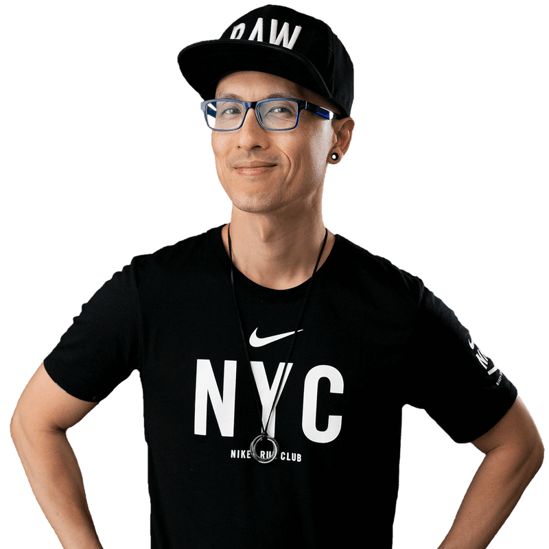

Chris Do

Chris do - CEO & Founder of thefutur
Chris Do is an Emmy award-winning designer, director, CEO and Chief Strategist of Blind and the founder of The Futur—an online education platform with the mission of teaching 1 billion people how to make a living doing what they love.
He has helped thousands of individuals through his videos and continue to spread his knowledge and experience, in turn helping more and more people achieve what they want.
To read more about Chris do